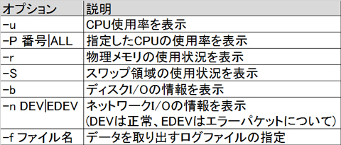
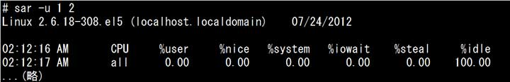
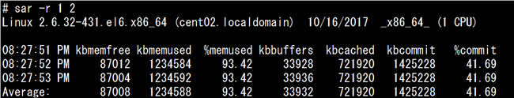
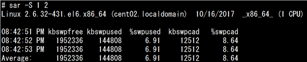
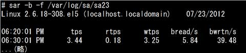
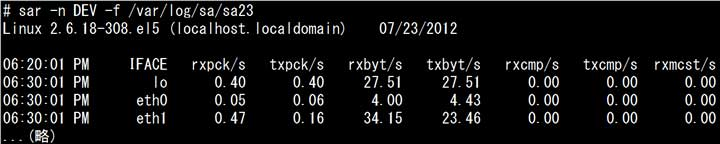
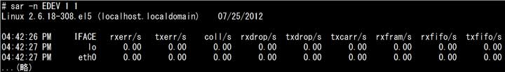

- 問題ID : 21868 リソース使用状況の把握
- 履歴
正解
-r
解説
sarコマンドの書式と主なオプションは以下のとおりです。
sar [オプション] [表示間隔(秒) [回数]]

上表より正解は「-r」です。
例）24日のメモリの情報を表示する場合
# sar -r -f /var/log/sa/sa24
その他の選択肢については上表をご確認ください。
参考
sarコマンドは、sadcコマンドが収集した様々な情報を表示するコマンドです。
sadcコマンドはcronの設定により定期的に実行され、収集した情報は「/var/log/sa/saXX」ファイルに書き込まれます。（「XX」は数字で日付を表します。）
「-f」オプションで読み込むログファイルを指定できます。ログファイルを指定しない場合は、当日のログファイルが利用されます。
なお、表示間隔と回数を指定すると連続して最新の状態を表示します。
書式：sar [オプション] [表示間隔(秒) [回数]]
sarコマンドの「-u」オプションはシステム全体としてのCPU使用率を表示します。
以下は「sar -u」コマンドの実行例と表示項目です。

・%user ユーザプロセスの割合
・%nice nice値(優先度)つきプロセスの割合
・%system システムプロセス(カーネル)の割合
・%iowait I/O待ち時間の割合
・%steal バーチャルマシンに使用された時間の割合
・%idle アイドル時間の割合
sarコマンドの「-r」オプションは物理メモリの使用状況を表示します。
以下は「sar -r」コマンドの実行例と表示項目です。

・kbmemfree 空いている物理メモリのサイズ
・kbmemused 使用中の物理メモリのサイズ
・%memused 物理メモリの使用率
・kbbuffers バッファキャッシュのサイズ
・kbcached ページキャッシュのサイズ
sarコマンドの「-S」オプションはスワップ領域の使用状況を表示します。
以下は「sar -S」コマンドの実行例と表示項目です。

・kbswpfree 空いているスワップ領域のサイズ
・kbswpused 使用中のスワップ領域のサイズ
・%swpused スワップ領域の使用率
・kbswpcad スワップアウト後にまだスワップにキャッシュしている量
・%swpcad スワップ使用量に対するキャッシュされたスワップメモリの使用率
sarコマンドの「-b」オプションはディスクI/Oの状況を表示します。
以下は「sar -b」コマンドの実行例と表示項目です。

・tps I/O転送リクエスト数/秒
・rtps デバイス読み込みリクエスト数/秒
・wtps デバイス書き込みリクエスト数/秒
・bread/s デバイスからの読み取りブロック数/秒
・bwrtn/s デバイスへの書き込みブロック数/秒
sarコマンドの「-n DEV」オプションはネットワークインターフェースの送信・受信パケット、「-n EDEV」はネットワークインターフェースの送信・受信エラーパケットに関する情報を表示します。
以下は「sar -n DEV」コマンドの実行例と表示項目です。

・IFACE ネットワークインタフェース名
・rxpck/s 受信パケット数/秒
・txpck/s 送信パケット数/秒
・rxbyt/s 受信バイト数/秒
・txbyt/s 送信バイト数/秒
・rxcmp/s 圧縮パケットの受信バイト数/秒
・txcmp/s 圧縮パケットの送信バイト数/秒
・rxmcst/s マルチキャストパケットの受信パケット数/秒
以下は「sar -n EDEV」コマンドの実行例と表示項目です。

・IFACE ネットワークインタフェース名
・rxerr/s エラーパケット受信数/秒
・txerr/s 送信時のエラーパケット発生数/秒
・coll/s コリジョン発生数/秒
・rxdrop/s バッファ不足で破棄された受信パケット数/秒
・txdrop/s バッファ不足で破棄された送信パケット数/秒
・txcarr/s 送信時のキャリアエラー数/秒
・rxfram/s 受信時のフレームエラー数/秒
・rxfifo/s 受信パケットのFIFOオーバーラン数/秒
・txfifo/s 送信パケットのFIFOオーバーラン数/秒